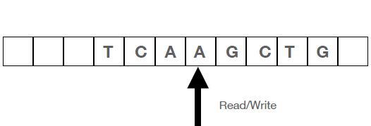

Technological contributions
Turing developed the computer in an effort to resolve the Entscheidungsproblem, a difficult puzzle. Mathematicians struggled with this difficult problem, attempting to determine whether any mathematical claim could be verified or refuted by a methodical procedure similar to what is currently known as an algorithm. Turing approached this challenge by imagining a device that would have an infinitely long tape covered in symbols and would be able to alter other symbols with instructions. This model, also referred to as the universal Turing machine, functions as a mathematical depiction of the computers we use on a daily basis.

Turing made important advances in cryptography, theoretical biology, and artificial intelligence. During World War II, he received attention and praise for his outstanding benefactions to cryptography. Turing was essential in extending and modifying the cryptanalytic methods created by Polish mathematicians. The German Enigma was successfully deciphered as a result of this operation, which had a significant effect on the war trouble.
Turing carried on refining his theories regarding computer science after the war. The first real computers were built thanks to his efforts, but his most well-known contribution was a 1950 paper he released in which he posed the question, "Can machines think?" He described a process that became known as the Turing test to see if a machine could mimic human speech. It became an essential component of the artificial intelligence community, although many contemporary academics doubt its applicability.